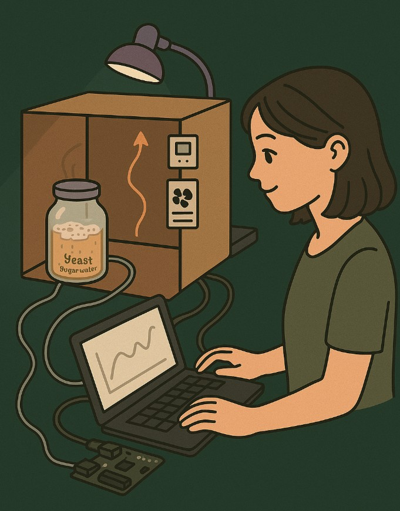

전자공학 × 생명과학 융합 기반 실내 공기질 변화를 분석하는 스마트 환경 분석 시스템
밀폐된 공간에서는 온도·습도·CO₂ 농도가 빠르게 변화하며, 이는 곰팡이 발생과 건강 악화로 이어질 수 있습니다. 본 탐구 활동에서는 환경 센서 기술(전자공학)와 이스트 발효(생명과학)를 결합하여 밀폐 공간의 환경 변화를 직접 측정하고 분석하는 스마트 실내 환경 모니터링 시스템을 제작했습니다.
이스트와 설탕 용액이 발효하며 CO₂와 수분을 방출합니다. 이 과정은 밀폐된 실험 박스 내부의 공기질을 빠르게 변화시키며, 실제 실내 환경 악화의 축소 모델로 작용합니다.
센서 데이터를 기반으로 실내 환경이 악화되었다고 판단하는 기준값을 설정하였습니다. 아래 조건을 초과하면 시스템은 자동으로 “환기 필요” 메시지를 출력하도록 구성할 수 있습니다.
이러한 기준은 환경공학 및 보건 연구에서 제시하는 값들을 참고하여 설정한 것으로, 실내 공기질이 악화되는 시점을 구분하는 데 도움을 줍니다.
Arduino 기반 환경 센서를 이용하여 실시간으로 환경 변화를 측정했습니다.
23°C → 약 26°C까지 증가 (LED·밀폐환경 영향)
48% → 63%까지 상승 (발효 과정 수분 증가)
센서 트러블로 정량 데이터는 확보되지 않았지만, 발효 반응·기포 생성 등을 통해 CO₂ 증가가 확실히 일어났음을 확인
생명과학 실험(발효)의 결과가 센서 데이터의 변화를 유발하며, 이는 자동 환기 시스템이 필요한 환경 조건을 증명하였습니다.
스마트 실내 환경 모니터링 시스템은 생명과학과 전자공학이 실생활 문제 해결을 위해 어떻게 결합될 수 있는지를 보여주는 융합 프로젝트였습니다. 발효 실험이 실제로 공기질 악화를 유발하고, 센서는 이를 감지하여 향후 자동 환기 시스템으로 확장될 수 있음을 확인했습니다.
정확한 측정과 분석은 더 나은 실내 환경을 만드는 기반이 됩니다.